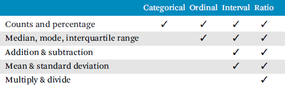

All life is an experiment. The more experiments you make the better.
—Ralph Waldo Emerson
The Learn Stage is all about continuous discovery of what works well and what doesn’t work so well. The pursuit of learning about one’s creations and how others experience them is more essential for VR than for any other technology.
Learning about what works in VR and how to improve upon one’s specific application can take many forms. Learning might be as simple as changing values in code and immediately seeing the results, which is not uncommon for programmers to do hundreds of time in a single day. Or learning might take months to conduct due to formal experiment design, development, testing hundreds of users, and analysis. Although not as rapid as code testing, this section leans toward fast feedback, data collection, and experimentation. This enables the team to learn quickly how well or not ideas meet goals, and to correct course immediately as necessary. It is also highly recommended to utilize VR experts, subject-matter experts, usability experts, experiment-design experts, and statisticians to ensure you are doing the right things to maximize learning. The earlier problems are found, the less expensive they are to fix. Finding a problem near final deployment can result in failure for the entire project.
Understanding the learning/research process not only enables one to conduct his own research but also enables one to understand the research of others, where it might apply to one’s own needs or project, and to intelligently question claims instead of blindly accepting them.
Like the other stages of iterative design, the Learn Stage will evolve over the course of the project. Initial learning will consist of informally demonstrating the system to teammates to get general feedback. Eventually, more sophisticated methods of collecting and analyzing data might be employed that very well may go beyond what is discussed here. Readers are encouraged to use only the concepts that most directly apply to their project; all projects will not use all concepts. However, readers will benefit by being aware of all of them.
Effective communication is essential for learning. This includes communication between team members as well as communication with users. Effective learning and communication is heavily dependent on attitude of how one seeks out and reacts to constructive criticism. Those who have problems with receiving criticism about their work will not make it far with VR. A positive mind-set and attitude about continual improvement is essential, and often the greatest breakthroughs occur through breakdowns that result from others pointing out issues that are not obvious to those creating the experience.
When demonstrating systems and asking for feedback, think positively for yourself, your team members, and users even when failure occurs. Failure is a learning experience; do not fear it. Of course the goal is success, but often we don’t really know why we succeeded. With an appropriate attitude toward failure, it is often possible to figure out why, to ensure that the problem will not happen again.
When communicating with users, the following points are essential in order to maximize learning.
• Do not blame/belittle users or their opinions/interactions with the VR application. Doing so shuts them down emotionally where they will not effectively provide feedback.
• Actively investigate difficulties to determine how the project can improve.
• Assume what others are doing is partially correct and then provide suggestions that enable them to correct and move on.
• When someone points out a problem you are already aware of, thank them for noticing and encourage them to continue looking for problems.
• Instead of using words like failure, talk about learning.
As an additional benefit of communicating effectively with users, those giving feedback will also feel good about themselves and have a sense of contribution and ownership, which can turn them into fans/evangelists when the product becomes publicly available. Such community involvement is essential for crowdfunding campaigns (e.g., Kickstarter).
A common mistake VR creators, especially programmers, make when creating VR experiences is that they assume what works for themselves will work for everyone else. Unfortunately, this is especially not the case for VR. Programmers often use the system in very specific ways without trying all unanticipated actions. Programmers also may have adapted to sensory incongruencies where they do not get sick as non-adapted users do.
Programmers don’t typically believe strongly that users’ opinions don’t matter—in fact, they are often aware they should be collecting feedback but see it as an inconvenience to regularly communicate with users; it is just not a priority. Most programmers do enjoy showing off their work occasionally, but such demos are not done frequently enough, are not done in a manner that results in quality data collection, and do not result in changes because opinions are not taken seriously enough.
Programmers’ time is extremely valuable, and it is true programmers should not be constantly bothered with giving demos and collecting data. Thus, the answer is that other team members should be used to collect data from users. However, it should be the case that programmers do at least occasionally participate in data collection, so that they take the feedback more seriously. There is greater resistance to seeing or hearing a report stating what one has created doesn’t work well, compared to observing in person how it doesn’t work well.
Research takes many forms and has many definitions. One definition of research is a systematic method of gaining new information and a persistent effort to think straight [Gliner et al. 2009].
How many VR teams conduct research with the intent to truly understand what works for representative users? That is, how many VR professionals collect external feedback apart from giving the standard VR demo in the office, meetup, or conference? Unfortunately, very few. This is a reason why there are normally so many unknowns in creating an engaging VR experience, leaving the success of the project to chance instead of finding and pursuing the optimal path toward success.
This section covers background concepts that are useful for designing, conducting, and interpreting research in an effective manner.
Data collection enables the effectiveness of VR aspects to be specified, quantified, and compared. Data collection often involves a combination of both automated data capture and observation by human raters. Some commonly collected data for VR include time to completion, accuracy, achievements/accomplishments, frequency of occurrence, resources used, space/distance, errors, body/tracker motion, latency, breaks-in-presence, collisions with walls and other geometry, physiological measures, preferences, etc. Clearly, there are many measures that can be useful for VR. The team should collect different types of data rather than relying on a single measure.
Data can be divided into qualitative or quantitative data. Both are important as they each provide unique insight about a design’s strength and weaknesses.
Quantitative data (also known as numerical data) is information about quantity—information that can be directly measured and expressed numerically. Quantitative data is best gathered with tools (e.g., a questionnaire, a simple physical measuring device, a computer, or body trackers) that require relatively little training and result in reliable information. Quantitative data analysis involves various methods for summarizing, comparing, and assigning meaning to data, which are usually numeric and which usually involve calculation of statistical measures. Typically, experimental approaches (Section 33.4) focus on collecting quantitative data.
Qualitative data is more subjective—it is biased and can be interpreted differently by different people. Such data includes interpretations, feelings, attitudes, and opinions. The data is often collected through words (whether spoken or written) and/or observation. Qualitative data is not directly measured with numbers but, in addition to being summarized and interpreted, can be categorized and coded. Constructivist approaches (Section 33.3) rely heavily upon qualitative data.
Both quantitative and qualitative approaches are useful for developing better VR experiences. In fact, both types of data are often collected from the same individuals. Qualitative data is often gathered first to get a high-level understanding of what might be later studied more objectively with quantitative data. Even for teams focusing only on qualitative data, it is useful to have a basic understanding of the core concepts of quantitative research, which can help in understanding when qualitative data and its conclusions might be biased.
Reliability is the extent to which an experiment, test, or measure consistently yields the same result under similar conditions. Reliability is important because if a result is only found once, then it may have happened by chance. If similar results occur with different users, sessions, times, experimenters, and luck, then we can be highly confident there must be some consistent characteristic of what is being tested.
Measures are never perfectly reliable. Two factors that affect reliability are stable characteristics and unstable characteristics [Murphy and Davidshofer 2005]. Stable characteristics are factors that improve reliability. Ideally, the thing being measured will be stable. For example, an interaction technique is stable if different users have a consistent level of performance on a task when using that technique. Unstable characteristics are factors that detract from reliability. These include a user’s state (health, fatigue, motivation, emotional state, clarity and comprehension of instructions, fluctuations of memory/attention, personality, etc.) and device/environment properties (operating temperature, precision, reading errors, etc).
An observed score is a value obtained from a single measurement and is a function of both stable characteristics and unstable characteristics. The true score is the value that would be obtained if the average was taken from an infinite number of measurements. The true score can never be exactly known, although a large number of measurements provide a good estimate. When testing participants repeatedly to measure learning effects, for example, it is important to have high reliability so that it is more likely the observed score was a result from learning versus occurring by chance.
Reliability values are often expressed as a correlation coefficient [Gliner et al. 2009] that takes a value between −1 and 1, as explained in Section 33.5.2.
A reliable measure may consistently measure something, but it might be measuring the wrong thing. Validity is the extent to which a concept, measurement, or conclusion is well founded and corresponds to real application. Validity is important to understand when conducting research to make sure one is actually measuring and comparing what one thinks they are measuring and comparing, conclusions are legitimate, and the results apply to the domain of interest.
Overall, validity is a function of many factors and researchers further break validity down into more specific types of validity. Unfortunately, researchers cannot agree on how to organize and name the different types of validity. Below general validity is broken down into face validity, construct validity, internal validity, statistical conclusion validity, and external validity.
Face validity is the general intuitive and subjective impression that a concept, measure, or conclusion seems legitimate. Face validity is one of the first things researchers consider when collecting data.
Construct validity is the degree to which a measurement actually measures the conceptual variable (the construct) being assessed. A measure has high construct validity if it captures the hypothetical quality that it claims to be measuring. More specifically, a measure with high construct validity adequately covers all aspects of the construct; correlates with other measures of the same construct; is not affected by variables not related to the construct; and accurately predicts concurrent and future measurements, behavior, or performance. A common example of construct validity is the ability of an assessment tool to differentiate between experts and novices performing a given task.
The goal of collecting data may be to measure user performance, user preference, some aspect of a generalized interaction technique, or a specific implementation for analyzing usability issues. At early stages of testing, bugs and imperfections will be present. Because of system imperfection, the researcher must be careful what is being measured. In many cases, the specific implementation is not what is of interest, because problems are known that will be fixed. Rather, questions are more often about general user preferences, performance, and perception that are unrelated to bugs already on the maker’s task list to be fixed. If a system artifact has been measured when that is not the intention, then a violation of construct validity has occurred. Researchers must be careful of concluding that a concept is not effective in general just because it does not work in its current implementation.
Internal validity is the degree of confidence that a relationship is causal. Internal validity depends on the strength or soundness of the experiment design and influences whether one can conclude that the independent variable or intervention caused the dependent variable to change. When the effects of the independent variable cannot be separated from the possible effects of extraneous circumstances, the effects are said to be confounded (Section 33.4.1). Internal validity can be threatened or compromised by many confounds including the following.
History is an extraneous environmental event that occurs when something other than the manipulated variable happens between the pre-test and the post-test. An example is if data collection is conducted on different days—some world event may have occurred that altered opinion or motivation for performing well.
Maturation is personal change in participants over time. The changes might be due to changes that are not relevant to that being tested. For example, participants may grow tired, become sick, or become resistant to VR sickness.
Instrumentation occurs due to change in the measurement tool or observers’ rating behavior. For example, a tool for measuring reaction time or physiological measures could go out of calibration. Observers that rate participants change their criteria over time or, worse, different observers are used. Calibration, providing guidelines, and training observers are important for reducing instrumentation bias. The room setting, hardware setup, and software should not change between sessions.
Selection bias occurs due to non-random assignment or self-selection of participants to groups. Selection bias is best solved by randomly assigning participants to groups. If participants self-select themselves into groups, then bias can be reduced, but not removed, by not letting them know of the differing conditions. Fans volunteering to test a system will certainly be biased toward liking a VR experience more so than the general targeted population.
Attrition (also known as mortality) is the dropout of participants. This is a problem for validity when the attrition for one group is different from another group. This is a major problem when participants drop out due to VR sickness. If one condition causes one group to have more sickness, then that group will lose more participants. Those that do not drop out will likely have a higher tolerance for sickness, and thus the results may be due to some characteristic that correlates to tolerance of sickness rather than the factor being studied.
Retesting bias often occurs when the data is collected from the same individual two or more times. Participants are likely to improve/learn on the first attempt due to practice that carries over into later tests. Results may be due to this practice rather than due to the manipulated variable.
Statistical regression occurs when participants are selected in advance based on high or low scores. Many of those who scored low or high scored that way due to chance. On subsequent testing, scores tend to average out due to the initial scores being different from their true average score. There is no way to determine if the changes occurred due to statistical regression or due to the factor being tested. Selection of participants should not be based off of previous scores unless multiple tests showed consistent and reliable results.
Demand characteristics are cues that enable participants to guess the hypothesis. Participants might modify their behavior (consciously or subconsciously) to look good, appear politically correct, or make the experimenter look good or bad.
Placebo effects occur when a participant’s expectation that the experiment causes a result instead of the experimental condition itself causing the result. For example, pre-tests with the Kennedy Simulator Sickness Questionnaire (Section 16.1) have been found to cause heightened sickness as reported in post-tests [Young et al. 2007]. Or, if the participant believes that one interaction technique is better than another technique, then it may be the result occurs to the belief rather than the mechanics of the interaction.
Experimenter bias occurs when the experimenter treats participants differently or behaves differently. This might be explicit bias due to the experimenter encouraging the participant to perform better under one condition, but is more often unintentional. The experimenter may intend not to be biased but may not even realize his own body language and tone of voice convey a preference for one condition. Ways to minimize experimenter bias are to make the experimenter blind to the conditions (e.g., randomize conditions and do not allow the experimenter to see what the participant sees), use naive experimenters (i.e., hire an assistant who would not know the difference of conditions even if he saw the conditions), and/or minimize the experimenter’s time with the participant (e.g., have the instructions given and data collected by the computer).
Statistical conclusion validity is the degree to which conclusions about data are statistically correct. Some common threats to statistical conclusion validity include the following.
A false positive is a finding that occurs by chance when in fact no difference actually exist. (e.g., there is a chance that flipping an unweighted coin lands heads-up several times in a row). If the experiment is conducted again, then the difference will not likely be found.
Low statistical power most commonly occurs due to not having a large enough sample size. Statistical power is the likelihood that a study will detect an effect when there truly is an effect. A common mistake researchers make is to claim there is no difference between conditions, when in actuality there may be a difference but the researchers did not find the difference due to not having enough statistical power. In fact, an experiment can never prove two things are truly identical (an experimental result shows they are likely different with some probability), although techniques do exist that can show two things are close within some defined range of values.
Violated assumptions of data are wrongly assumed properties of data. Different statistical tests have different assumptions. For example, many tests assume data is normally distributed (Section 33.5.2). If these assumptions are not valid, then the experiment may lead to wrong conclusions.
Fishing (also known as data mining) is the searching of data via many different hypotheses. If a difference is found when many variables are explored, the findings may be due to random chance. For example, if 100 different types of coins are flipped 10 times each, then one or more of those coin types may land heads up 10 out of 10 times just by chance—not necessarily because that coin type is weighted. Different statistical corrections can be used to compensate for the increased likelihood of finding a difference in multiple tests.
External validity is the degree to which the results of a study can be generalized to other settings, other users, other times, and other designs/implementations. The results that one interaction technique is better than some other technique might only apply to the specific configuration of the lab, the type of users, or the specifics of the VR system (e.g., field of view, degrees of freedom, latency, software configurations). Some VR research results from the 1990s do not necessarily apply to today due to different users (e.g., researchers versus consumers) and due to changes in technology. At that time, latency of 100 ms or more was regarded as acceptable. Today, such numbers are completely unacceptable. Today’s researchers have to use their best judgment on a case-by-case basis to decide if they want to take into account results from a previous time or reconduct some of those experiments.
If something changes in the design or implementation of the system, then the previously reliable findings may no longer apply. For example, one interaction technique might be superior to another interaction technique for the system being tested but not necessarily for a system with different hardware. Ideally, experimental results will be robust to different forms of hardware, different versions of design and software, and across some range of conditions. In many cases, experiments should be conducted again when hardware has changed or significant design changes have occurred. Similar results will give confidence that the design is more robust, possibly even to specific conditions not yet tested.
Of course different techniques will never generalize to all situations and all hardware. Different input devices can have very different characteristics as discussed in Chapter 27. Minimal computer requirements (e.g., CPU speed and graphics card capabilities) should also be determined based off of testing. This is much more important than traditional desktop and mobile systems due to risk of sickness (Part III). Even for results that have high external validity, VR applications should never be shipped that have not been extensively tested with the targeted hardware.
Measures may be consistent (reliable) and truly reflect the construct of interest (validity) but may lack sufficient sensitivity to be of use. Sensitivity is the capability of a measure to adequately discriminate between two things; it is the ability of an experimental method to accurately detect an effect, when one does exist. Is the measure capable of distinguishing between multiple levels of the independent variable? If not, then find a way to increase sensitivity.
Constructivist approaches construct understanding, meaning, knowledge, and ideas through experience and reflection upon those experiences rather than trying to measure absolute or objective truths about the world. The approach focuses more on qualitative data and emphasizes the integrated whole and the context that data is collected in. Research questions using this approach are often open-ended but structured enough to be useful for summary and analysis.
This section describes various methods of collecting data in order to better understand VR experiences and to improve upon those experiences.
Mini-retrospectives are short focused discussions where the team discusses what is going well and what needs improvement. Such retrospectives should be kept short but performed often. It is much better to have weekly 30 minute mini-retrospectives rather than monthly half-day retrospectives.
Retrospectives should be constructive. Jonathan Rasmusson states in The Agile Samurai [Rasmusson 2010] the retrospective prime directive:
Regardless of what we discover, we understand and truly believe that everyone did the best job they could, given what they knew at the time, their skills and abilities, the resources available, and the situation at hand. In other words it’s not a witch hunt.
Ideally, mini-retrospectives will result in themes for future iterations and areas to track that the team wants to improve upon.
Demos are the most common form of acquiring feedback from users. Demos are a great start for getting a general feel of others’ interest. Demos should be given often to stay in close communication with the intended audience, to understand real users, to receive fresh ideas, and to market the project. Most importantly, demos give something for the team to work toward and to show progress is being made.
However, the team should distinguish between giving demos and collecting data. Whereas demos are easy to do and do provide some basic feedback, they are the least useful method of collecting data unless they are combined with more data-focused approaches. Most often the point of demos is to market the project. Because of this, data collected during demos is typically not quality data. This is due to many factors such as data collection not being a priority, users often not providing honest opinions (i.e., they are polite), feedback almost always being remembered rather than recorded, the chaos of many users, answering questions instead of collecting data, and bias of those giving the demo and reporting the results. When data collection really is a goal of a demo, then structured interviews and questionnaires can be used to collect less biased data.
The best learning from a demo occurs when a public demo goes horribly wrong in a big way. This type of learning can be extremely painful. But if the company/team can survive the disaster, then such a lesson usually ignites a team into taking massive action to build something of quality and to make sure to do things well next time so they will not be humiliated again.
Interviews are a series of open-ended questions asked by a real person and are more flexible and easier for the user than questionnaires. An interview results in the best data when conducted immediately after the person being interviewed experienced the VR application. If the interview cannot be performed in person, then it can be performed by telephone or (worse) in text form.
Interviews are different from testimonials. The intention of a testimonial is to produce marketing material showing that real people like something. The intention of an interview is to learn. Interview guidelines should be created in advance that are designed to keep the interview on track and to reduce bias.
Appendix B provides an example of a simple interview guideline document where the intention is to generally improve a VR experience. When the intent is to improve upon more specific aspects of a VR experience, then more specific questions should be included.
Listed below are some tips for getting quality information out of interviewees.
Establish rapport. Skilled interviewers get to know and quickly become friends with the interviewees before asking questions specific to the intent. Differences in personal style, ethnicity, gender, or age may reduce rapport resulting in less truthful answers. For example, a professor or other authority figure conducting the interview may result in some interviewees not answering with their true thoughts. Attempt to match the interviewer with the intended audience based on the personas created, as described in Section 31.11.
Perform in a natural setting. Conducting interviews in unnatural or intimidating settings such as a lab can result in little response from interviewees. Many game labs have rooms set up as living rooms. The team can also travel to the site of the interviewee instead of having the interviewee travel to the site of the interviewers.
Time. Don’t spend more than 30 minutes per demo/interview maximum in a single session. Set time limits by scheduling interviews back to back. It is better to interview multiple individuals than to interview one individual in depth. Individuals can be followed up with if they have more useful things to say.
Questionnaires are written questions that participants are asked to respond to in writing or on a computer. Questionnaires are easier to administer and provide for more private responses. Note questionnaires are different than surveys as the intent for surveys is to make inferences about an entire population, which requires careful sampling procedures. Surveys are typically not appropriate for evaluation of VR applications.
Asking for background information can be useful for determining if participants fit the target population that resembles personas created in the Define Stage (Section 31.11). Conversely, such information can be used to better define personas if participants are self-selected. The information can also be used to make sure a breadth of users is providing feedback, to match participants when comparing performance between participants, and to look for correlations with performance.
The Kennedy Simulator Sickness Questionnaire as described in Section 16.1 is an example of a questionnaire commonly used for VR studies.
Close-ended questions provide answers that are selected by circling or checking.
Likert scales contain statements about a particular topic, and participants indicate their level of agreement from strongly disagree to strongly agree. The options are balanced so there are an equal number of positive and negative positions.
Partially open-ended questions provide multiple answers that participants can circle or check, but also provide an option to fill in a different answer or additional information if they don’t feel the listed options are appropriate.
Open-ended questions are extremely useful for obtaining more qualitative data and information about the experience that is not expected. However, some participants must be given extra encouragement to fill out such questions as it takes more cognitive effort than simply circling an option or checking a box.
An example questionnaire, used in evaluation of Sixense’s MakeVR application [Jerald et al. 2013], is included in Appendix A. The questionnaire includes the Kennedy Simulator Sickness Questionnaire, a Likert scale, a background/experience questionnare, and open-ended questions.
Focus groups are similar to interviews but occur in group settings. Group settings are more efficient than individual interviews and can stimulate thinking as participants build off of each other’s ideas. Traditionally, focus groups have been used to determine how customers will perceive and react to new products or to gather opinions for improving political campaigns. For VR, participants typically use a prototype demo to base their feedback on. The goal is to stimulate thinking and elicit ideas aimed at improving on existing approaches and creating new experiences and interactions. Focus groups are extremely useful in the early phases of VR design as the feedback can be used to explore new concepts, better refine questions, and improve upon data collection via more structured approaches.
An excellent example of an effective focus group was conducted by Digital ArtForms as part of the National Institute of Health grant “Motion-Controlled Gaming for Neuroscience Education” [Mlyniec 2013]. Two focus groups consisted of two separate classrooms of fifth graders. After subject-matter expert Ann M. Peiffer, PhD, of Wake Forest School of Medicine described the basic concepts of stroke and its causes to the class, each child individually put together a virtual 3D puzzle of a brain that consisted of the different brain lobes. As they grabbed a virtual brain lobe with tracked hand-held controllers, audio and video embedded within the game explained what that lobe controlled. In the next level, a virtual character complained about and acted out a stroke symptom. The child then “cured” the character by injecting “medicine” into the appropriate lobe. Time constraints and scores were awarded to motivate students to complete the task.
In addition to collecting data via pre- and post-tests to determine learning effectiveness, the team asked the kids how the game might be improved and solicited ideas for future games. The children came up with the concept of zombies with symptoms caused by stroke. As the zombies would come at the player, the student would have to quickly determine what a zombie’s deficit was and then reach for the correct brain lobe to throw at the zombie, feeding and curing it with the appropriate “medicine” before it could reach the player. This game concept never would have been conceived without input from the children. Digital ArtForms is now developing a VR title as a result of the focus group.
Expert evaluations are systematic approaches conducted by experts that identify usability problems from the user’s perspective with the intent to improve the user experience. When done properly, expert evaluations are the most efficient method of improving upon the usability of the system.
Figure 33.1 Progression of expert evaluation methods.
This section gives an overview of the methods that VR usability experts have found to be most efficient and effective for collecting quality data, enabling fast iteration toward ideal solutions. This is best done with different types of evaluations in succession as shown in Figure 33.1. Each evaluation component generates information that feeds into the next evaluation component, resulting in an efficient and cost-effective strategy for designing, assessing, and improving VR experiences [Gabbard 2014]. These methods are typically used for multiple aspects of the system and performed at different phases of the project.
Expert guidelines-based evaluation (also known as heuristic evaluation) identifies potential usability problems by comparing interactions (either existing or evolving) to established guidelines [Gabbard 2014]. The identified problems are then used for recommendations for improving the design. This should be done early in the development cycle so issues can be corrected before affecting other aspects of the design.
Ideally, multiple VR usability experts perform independent evaluations of a prototype. Multiple evaluators result in quality and quantity of data that outweigh the cost of those evaluators. As this is for general VR usability most efficiently evaluated by experts, no representative users are involved in this type of evaluation. Evaluations should give a score of each issue’s severity and describe why it is a problem. After each expert independently evaluates the application, results are combined and ranked to prioritize fixing critical usability problems and to design subsequent formative evaluations.
Unfortunately, traditional 2D interface guidelines are not appropriate for VR, and no well-established guidelines specific to VR yet exist. Although not intended specifically for this type of evaluation, many of the guidelines in this book from Part III and Part V can be used. Other guidelines include the Oculus Best Practices Guide [Oculus Best Practices 2015], Joseph Gabbard’s taxonomy of usability characteristics [Gabbard 1997], and NextGen Interactions’ internal documentation.
After expert guidelines-based evaluation has revealed and solved as many usability problems as possible, it is time to move on to formative usability evaluation. Formative usability evaluation diagnoses problems by gathering critical empirical evidence from users interacting with an application during formative and evolving stages of design. The goal is to assess, refine, and improve usability, learning, performance, and exploration through observation of representative users [Gabbard 2014, Hartson and Pyla 2012]. This improves the application by iteratively identifying problems throughout the design/development process so that the team can continually refine tasks and fine-tune interactions. The method should be conducted by VR usability experts as it relies heavily on a solid understanding of VR interaction that is dependent on context (i.e., it consists of more than a predefined list of items to evaluate). If done well, such evaluation can be quite efficient and effective for improving the usability of VR interactions.
Figure 33.2 shows the formative usability evaluation cycle. User task scenarios (which can be taken from task analysis—see Section 32.1) are first created to exploit and explore all identified tasks, information, and workflows. As users interact with the system, they “think aloud” by explicitly verbalizing their actions, thoughts, actions, and goals [Hartson and Pyla 2012]. Evaluators collect qualitative and quantitative data in order to identify problems as well as strengths. This data is then analyzed and summarized with suggestions for improvement and emphasis on keeping features that work well. This information can also be used to improve user task scenarios for the next iteration of the formative usability evaluation.
One of the most useful results of evaluation is a list of critical incidents [Hartson and Pyla 2012]. A critical incident is an event that has a significant impact, either positive or negative, on the user’s task performance and/or satisfaction. This can include system crashes/errors, inability to complete a task, user confusion/disorientation, loss of tracking, sudden onset of discomfort, etc. Such critical incidents can dramatically impede usability and can have an effect on perception of application quality, usefulness, and reputation. Thus, identifying and correcting these problems as early as possible is essential to creating a quality experience.
Other data to collect includes accuracy and precision, task time to completion, number of errors, performance, and accomplishment of learning objectives. Such data can be measured through a scoring system visible to users, designed both to increase motivation and to target data collection.
Figure 33.2 Formative usability evaluation cycle. (Adapted from Gabbard [2014])
During the final stages of formative evaluation, evaluators should only observe and not suggest how to interact with the system. This almost always uncovers problems of learning a system when no human is present to teach how to interact. Most users of the final experience will not have someone available to explain how to interact. Thus signifiers, instructions, and tutorials often result from this evaluation.
Comparative evaluation (also known as summative evaluation) is a comparison of two or more well-formed complete or near-complete systems, applications, methods, or interaction techniques to determine which is more useful and/or more cost-effective. Comparative evaluation requires a consistent set of user tasks (borrowed or refined from a formative usability evaluation) that can be used to collect quantitative data to compare across conditions.
Evaluating multiple independent variables can help to determine the strengths and weaknesses of different techniques. Evaluators compare the best of a few refined designs by having representative users perform tasks to determine which of the designs is best suited for integration within a larger project or for delivery to customers. Comparative evaluation is also used to summarize how a new system compares to a previously used system (e.g., does a VR training system result in more productivity than a traditional training system?). However, be careful of threats to validity (Section 33.2.3) that may result in erroneous conclusions.
An after action review is a user debriefing with an emphasis on the user’s specific actions. A member of the team discusses with the user his actions in order to determine what happened, why it happened, and how it could be done better. It is useful to watch and discuss real-world video of the user performing tasks along with a first-person perspective, which can easily be accomplished by using screen/video capture technology recorded during the VR experience. If the software can support it, then observing the action from a third-person viewpoint that can be interactively controlled also enables looking at the action from different perspectives.
The scientific method is an ongoing iterative process based on observation and experimentation. It typically begins with observations that lead to questions. These questions are then turned into testable predictions called hypotheses. These hypotheses can be tested in a variety of ways, including making further observations. The strongest tests come from carefully controlled and replicated experiments that gather empirical data. In order to gain confidence in a test result, the result should be replicated multiple times. The results of experiments more often lead to more questions than answers. Depending on the results of the tests, the hypothesis may require refinement, alteration, expansion, or rejection. This cycle of predict, test, and refine can repeat many times.
An experiment is a systematic investigation to answer a question and to gain new understanding. In most cases experimentation for the sake of creating VR applications is less formal than the extensive research methods performed by researchers more interested in scientific inquiry than creating experiences. Rigorous scientific/academic experiments are often overkill for those creating VR applications, and such formal experiments are not the focus of this book. However, understanding basic concepts of formal experiment can be useful for applied VR as such understanding can help design more basic informal experiments. Even if the perfect experiment cannot be conducted (and it rarely is perfect, even with months of planning), at least the team is aware of some of the pitfalls that might occur. Understanding formal experimental approaches also helps to comprehend research papers and interpret/explain results.
This section describes the basics of a single iteration of the scientific method.
The first step of exploring a problem is to obtain an understanding of what is to be studied. This can be done by learning from others (via trying their applications, reading research reports/papers, and talking with them); by trying oneself and observing others interacting with existing VR applications; by the constructivist approaches previously discussed; and by the various concepts discussed in the Define and Make Stages.
Once familiar with the overall problem, start by asking and answering the following questions:
• What specifically is the team trying to learn?
• What are the signals that provide feedback if something is working or not?
• What is the fastest and most effective way to get these questions answered?
Answering the above questions, along with documentation from previous processes such as the listed assumptions and requirements, will lead to more specific questions that can be turned into hypotheses. A hypothesis is a predictive statement about the relationship between two variables that is testable and falsifiable. An example of a hypothesis is, “Interaction technique X results in less time to complete task Y than interaction technique Z.”
Until the team has gained extensive experience with basic experimental designs (or the team already contains a senior researcher with experience in conducting experiments), experiments should only test a single hypothesis at a time. Adding more complexity adds significant risk by potentially making wrong assumptions, selecting the wrong statistical tests, having to add many more participants/sessions, misinterpreting results, etc.
To conduct an experiment, different variables must first be precisely defined.
The independent variable is the input that is varied or manipulated by the experimenter. An example of an independent variable is the selection interaction technique used (e.g., object snapping versus precision mode pointing described in Section 28.1.2).
The dependent variable is the output or response that is measured. The dependent variable values resulting from the manipulation of the independent variable are what will be statistically compared to determine if there is a difference. Examples of dependent variables are time to completion for a task, reaction times, and navigation performance.
Confounding factors are variables other than the independent variable that may affect the dependent variable and can lead to a distortion of the relationship between the independent and dependent variables. For example, if one group of participants is studied in the morning and another group in the evening, then one group may perform differently due to being more tired than the other group, not necessarily because the thing being studied causes different performance.
Being aware of and considering threats to internal validity (Section 33.2.3) can help to find potential confounding factors. Once such confounding factors are determined to be a problem, they can often be removed by setting those factors to be constant. A control variable (also known as a constant variable) is kept constant in an experiment in order to keep that variable from affecting the dependent variable.
A decision that must be made for all experiments is whether to design for within subjects or between subjects. Both have their advantages and disadvantages.
A within-subjects design (also called repeated measures) has every participant experience each condition. Within-subjects designs have the advantage of fewer subjects being required due to each participant experiencing all conditions and less variability within individuals. This results in more efficient data collection due to spending less time on recruiting, scheduling, training, etc. The disadvantage of within-subjects design is that differences between conditions may be due to carryover effects instead of due to what is intended to be measured. Carryover effects occur when experiencing one condition causes retesting bias in a later condition. Examples are learning/training, fatigue, sickness, etc. One way to reduce bias from carryover effects is to counterbalance the order that participants experience the different conditions (e.g., half of the participants first experience condition A then B, half of the participants first experience B then A).
A between-subjects design (also known as A/B testing when only two variables are being compared) has each participant only experience a single condition. Advantages are short times for participants, low dropout rate, and no carryover effects. The main disadvantage is the requirement to have a larger number of participants due to different participants needed for different conditions and larger variability between individuals.
A full experiment can be quite costly. If the experiment contains flaws or wrong assumptions, then the entire study may be invalidated. A pilot study is a smallscale preliminary experiment that acts as a test run for a more full-scale experiment. Such preliminary studies are used to help determine feasibility; discover unexpected challenges; improve upon the experiment design; reduce time and cost; and estimate statistical power, effect size, and sample size.
Once researchers are confident the experimental design is solid, then they proceed to full data collection from all participants. Note that experimenters should not change conditions once data collection has started as this can cause confounding factors and nullify the results of the experiment.
After all data has been collected, then statistical analysis (Section 33.5.2) as defined in the experimental design is performed. If the design has been precisely defined, then there should be no ambiguity if a result was found or not. However, the experimenters likely discovered ways the experiment could be improved upon and gained insight for new questions to further explore and experiment with. The process continues in an iterative manner.
True experiments use random assignment of participants to groups in order to remove major threats to internal validity. Because of the random assignments, the only difference between the two groups of participants will be due to chance. True experiments are optimal for determining cause-effect relationships.
A quasi-experiment lacks true random assignment of participants to conditions. An example of not randomly assigning participants to groups is having participants self-select which group they will belong to (even if they don’t know the difference of conditions between the two groups). Because of this non-random assignment, quasi-experiments are more likely to contain confounding factors. As a result it is more difficult to argue a cause-effect relationship. Quasi-experiments do have the advantage of being easier to set up than a true experiment when it is difficult to randomly assign participants.
Data interpretation is not always obvious. Data collection almost always leads to further questions. In some cases, data will be contradictory due to differences in conditions, users, and the way the data is collected.
Single measurements rarely give the entire picture. Interpreting data from a single user is risky as variance between users can be large. Instead look for patterns over multiple users. Be careful of assuming that finding a pattern is the truth as fishing for patterns can lead to false conclusions (Section 33.2.3).
An outlier is an observation that is atypical from other observations. Don’t automatically disregard outliers without trying to understand first why the outlier occurred. Did the outlier occur because there was an error in the system? If so, this could be the most important signal telling you to fix the error! Sometimes these outliers can provide more insight than more typical data.
Realize the results of an individual experiment are rarely the generalized truth (Section 33.2.3). As the design, implementation, and hardware changes, consideration should be given about how such changes may change the experiment results. If the experiment was for a very specific situation, then vary the conditions and run the experiment again.
Whereas this book does not go into the details of statistical analysis, this section does cover the basics so all team members can have a basic understanding of statistics; have a common language to speak; spot wrong assumptions; reduce the odds of incorrectly summarizing or interpreting data; and better understand VR research of others and their technical papers. At least one member of the team should be good at statistical analysis. This can be a professional statistician but is more often a programmer or psychologist that is good at math and has experience using statistical software tools.
Variables have different measurement scale types, and interpreting data can depend on the type properties. Variable scale types are divided into categorical, ordinal, interval, and ratio variables.
Categorical variables (also known as nominal variables) are the most basic form of measurement where each possible value takes on a mutually exclusive label or name. Nominal variables do not have an implied order or value. An example nominal variable is gender (male or female).
Ordinal variables are ordered ranks of mutually exclusive categories, but intervals between the ranks are not equal. An example of an ordinal variable is obtained by asking the question, “How many times have you used VR? A) Never, B) 1–10 times, C) 11–100 times, or D) over 100 times.”
Interval variables are ordered and equally spaced; the difference between values is meaningful. Interval variables do not have an inherent absolute zero. Temperature in Fahrenheit or Celsius and time of day are examples of interval variables.
Ratio variables are like interval variables but also have an inherent absolute zero. This enables meaningful fractions or ratios. Examples of ratio variables are number of users, number of breaks-in-presence, and time to completion.
Table 33.1 shows the ways values can be mathematically manipulated and statistically summarized depending on what measurement type is used. Be careful not to perform inappropriate calculations on data that are not ratio variables. For example, a common mistake is to multiply and divide interval data or to add/subtract ordinal data.
Table 33.1 Appropriate statistical calculations depend on the type of variable being measured. Check marks indicate it is appropriate to use the mathematical calculation with the measurement type.

Descriptive statistics summarize the main features of a dataset. Described below are some of the most common and useful concepts of descriptive statistics.
Averages. An average represents the middle of a dataset that the data tends toward. The average can take on different values depending on how it is computed. The three types of averages are the mean, median, and mode.
The mean takes into account and weighs all values of a dataset equally. The mean is the most common form of the average. Means can be overly influenced by an extremely small or large value that rarely occurs (i.e., an outlier). The mean is not appropriate when the data is categorical or ordinal.
The median is the middle value in an ordered dataset. The median is often more appropriate than the mean when data is skewed toward higher or lower values or there are one or more outliers. For example, the mean of the values (1, 1, 2, 3, 100) is 21.4 whereas the median is 2. In this case, the median 2 might be considered the more appropriate average of representing the central tendency of the data. The median is also most appropriate when the data is ordinal.
The mode is the most frequently occurring value in a dataset. The mode is most appropriate when the data is categorical.
Distribution of data. A histogram is a graphical representation of a distribution of data. Figure 33.3 shows an example histogram where participants responded by choosing from an option of seven discrete responses. In the case that measurement is not discrete, values can first be placed into bins (a series of intervals) and then the counts within each bin are displayed.
For some data, the histogram approaches what is called a normal distribution as the number of samples increases (Figure 33.4). A normal distribution (also known as a bell curve or Gaussian function) varies in width and height but is well defined mathematically and has useful properties for data analysis. Many statistical tests assume data is normally distributed.
In any experiment, there will always be variations in the collected data. The spread (also called variability) of a dataset signifies how dispersed the data is. Measures of spread include the range, the interquartile range, the mean deviation, the variance, and the standard deviation. All of these measures are always zero or greater, where a value of zero signifies all values within the dataset are identical. The larger the spread, the more the data is spread out.
The range is simply the minimum and maximum values of a dataset. The interquartile range is the range of the middle 50% of the data. The interquartile range is often preferred to the total range since it automatically removes outliers and gives a better idea of where most of the data is located.
Figure 33.3 A histogram of responses from a questionnaire to VR experts inquiring about the importance of using the hands with VR. (Courtesy of NextGen Interactions)
Figure 33.4 A dataset wth an approximately normal distribution of data.
The mean deviation (also known as the mean absolute deviation) is how far values are, on average, from the overall dataset mean. The variance is similar, but is the mean squared distance from the mean. The standard deviation is the square root of the variance and is the most common measure of spread. The standard deviation is useful for several reasons, one being that it is in units of the original data (like the mean deviation). Another benefit is, assuming the data is normally distributed, plus or minus one standard deviation from the mean contains 68% of the data and plus or minus two standard deviations contain 95% of the data. For example, a VR training task might have taken on average 47 seconds to complete with a standard deviation of plus or minus 8 seconds, i.e., 68% of users completed the task between 39 and 55 seconds and 95% of users completed the task between 31 and 63 seconds.
A correlation is the degree to which two or more attributes or measurements tend to vary together. Correlation values range between −1 and 1. A correlation equal to zero means no correlation exists. A correlation of 1 is a perfect positive correlation—as one value goes up the other value always goes up. Likewise, a negative correlation exists if as one value goes up the other value always goes down. Values between −1 and 1 signify that as one value changes the other value tends to change, but not always. It is important to note that correlation is not sufficient for proving causation. There could be other reasons the data correlates.
Statistical significance states that with some confidence (a 95% confidence level is normally used) the statistical result of an experiment did not occur by chance and thus there is some underlying cause for the result. If a coin was flipped 10 times and it came up heads every time, we can be fairly certain there was some event or property of the coin that caused it to turn up heads. However, there is a possibility this occurred by chance no matter how many times the coin was flipped and it came up heads. The p-value of an experiment represents the probability that a result occurred by chance rather than because there is something inherently truthful about the result. A p-value less than 0.05 (corresponding to a 95% confidence level) is typically considered to be statistically significant.
Statistical significance does not necessarily mean the result is important enough to influence the next iteration of the project. Practical significance (also called clinical significance) implies the results are important enough that the results matter in practice. For example, time to completion for a VR task might be statistically shorter for some condition by 0.1 seconds. However, if the average time to completion is 10 minutes, then the 0.1-second time improvement is probably not of practical significance and not worth being concerned about. If the 0.1 second improvement is a reduction in system latency from 0.15 second, then it is certainly of practical significance.